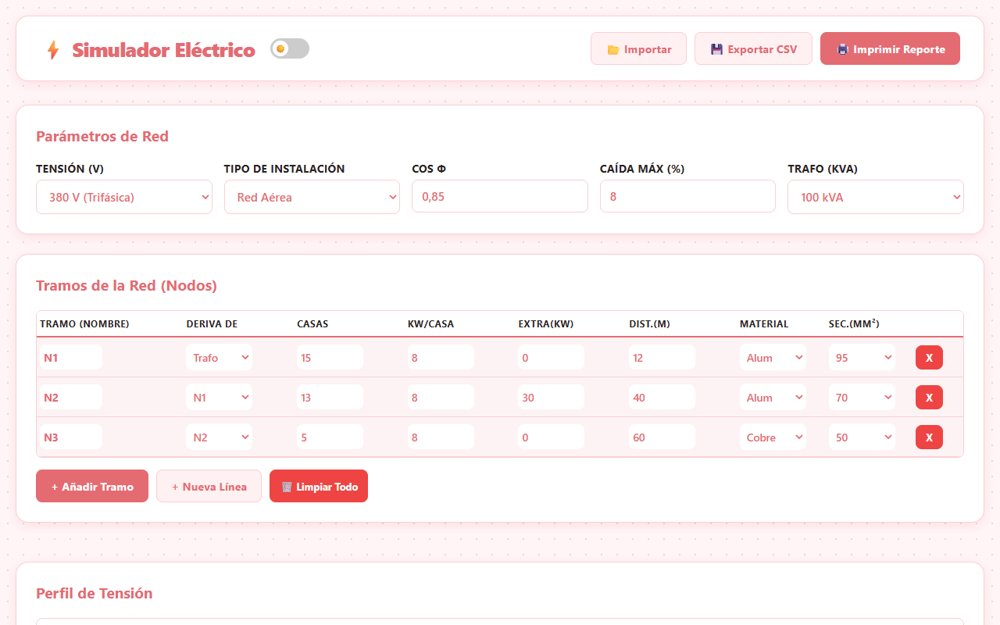

Problema
Muchos temas de circuitos se entienden mejor cuando se puede cambiar un valor y ver qué pasa.
Qué hice
- Implementación y revisión técnica de las ecuaciones.
- Simuladores de factor de potencia, estrella-triángulo, caída de tensión por tramos y motores paso a paso.
- Material de teoría sobre teoremas de redes, sistemas trifásicos y resonancia.
Límites
- Son herramientas didácticas y no reemplazan un software de estudios eléctricos.
- La caída de tensión usa la resistencia del conductor. No es un flujo de carga.